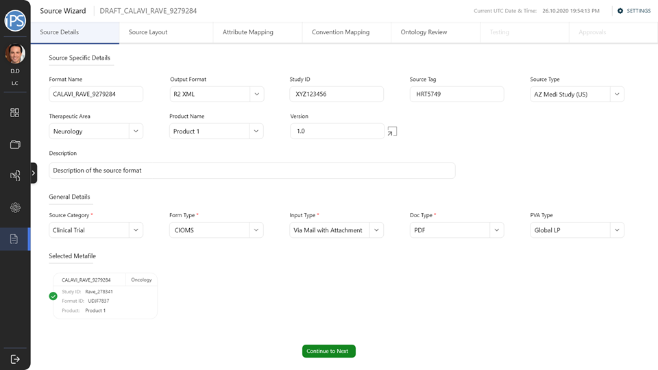
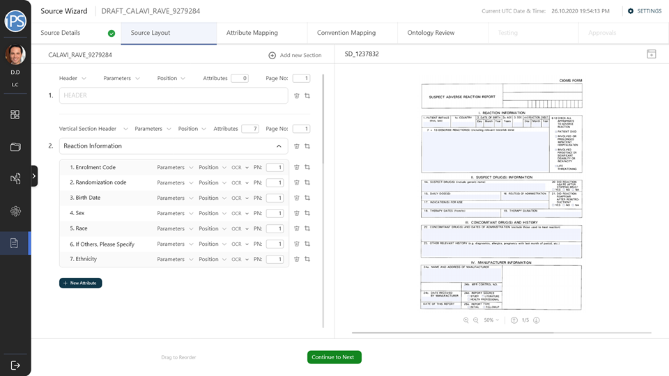
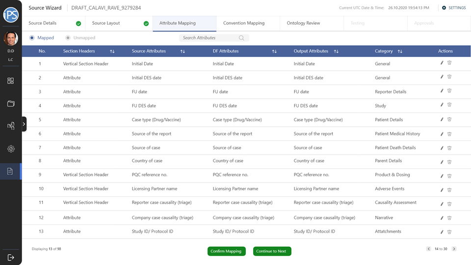
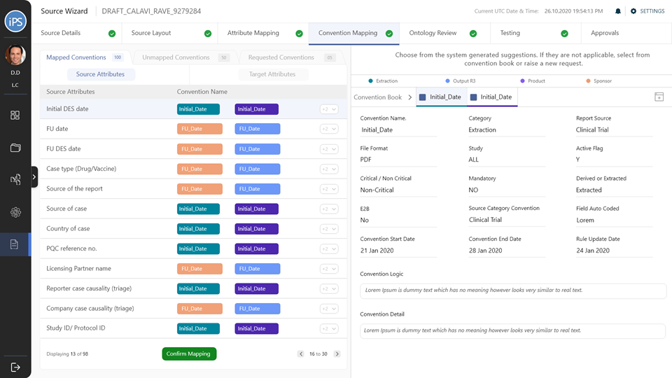
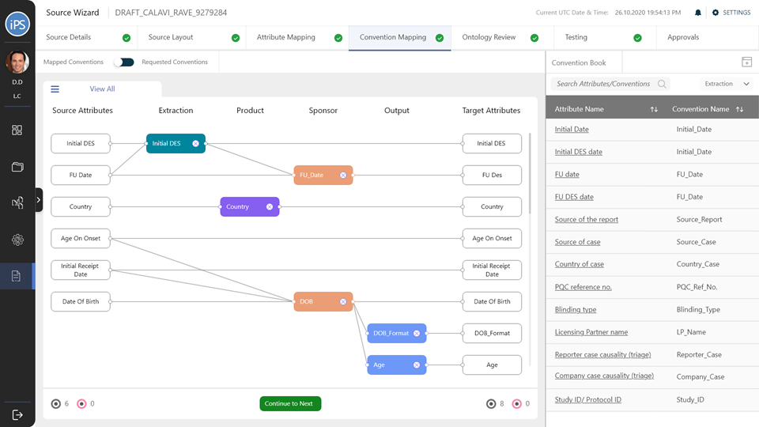
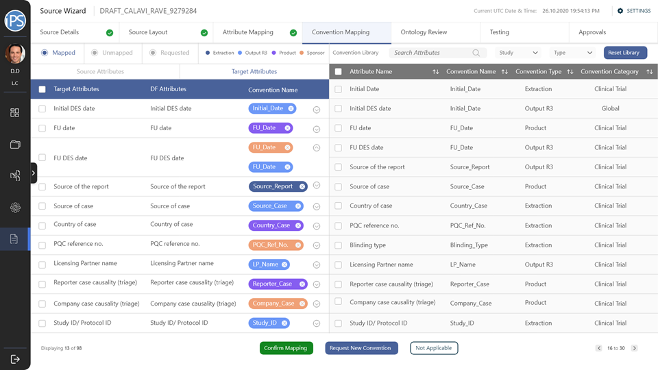
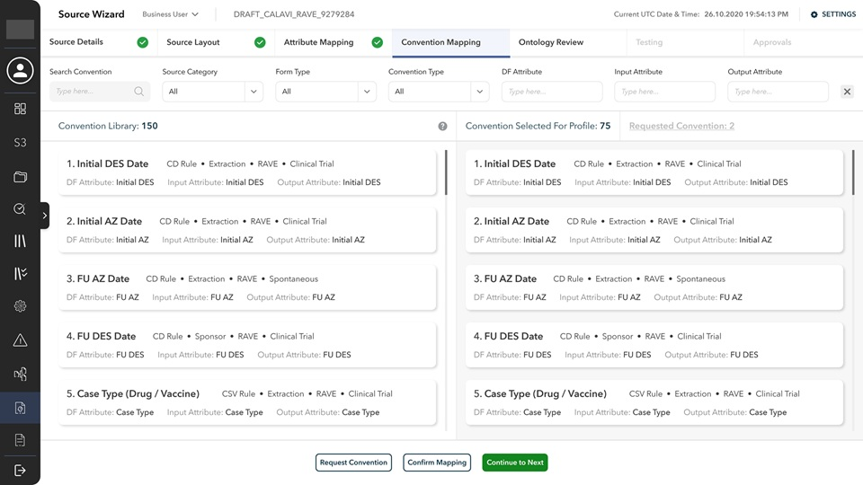
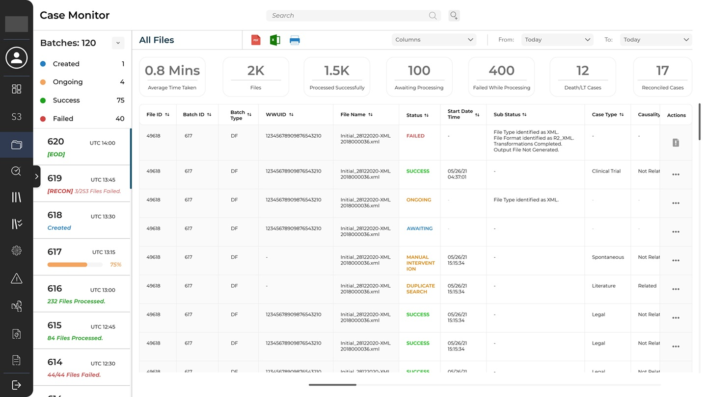

The Challenge
All drugs have to go through trials to get approved by FDA. Once the drug has been approved and is available in the market, it enters the final phase (phase 4) of the trial: Ongoing Study of Long Term Effects.
This phase assess the long-term safety and effectiveness of a drug, and identify any adverse effects that may not have been apparent in earlier trials. Thousands of people participate in this phase over multiple years.
When a patient is administered a drug and have an adverse reaction to it, an adverse reaction report is submitted to the manufacturing pharmaceutical organization. Over the years, tens and thousands of reports are received.
The Solution
Adverse Report Wizard is a tool that allows the pharmaceutical organizations to configure the processing of reports. Configurations are custom tailored to specific studies, and when completed, can process the received reports automatically.
The wizard includes features such as defining the source file details, customizing the layout of the report forms, attribute mapping, convention mapping, etc.



The first step is to define the parameters of the configuration; which study is it for, how it accepts reports, how the output will be etc.
The second step is to define the layout of the reports that it will accept. This includes creating the fields and mapping their co-ordinates with an actual report. This is also where the field type, data type, parameters, etc. are defined.
Third step is Attribute Mapping. Here the information is standardized. For example, the submitter can enter date in any format (source attribute), but the system can only process in yyyy/mm/dd (data field attribute). But humans don't read date in that format, so the output needs to be mm/dd/yyyy (output attribute, if in USA).
The fourth step is Convention Mapping. This is where it is defined how the information is processed between the source and df, and df and output attributes. A convention is a set of rules/codes/guidelines that direct the system. For example, a convention is what will tell the system how to change the format of the date or how to calculate the age of the patient from their date of birth.
Convention Mapping was the most challenging part of this project and had to go through multiple design iterations to make it the process faster and easy to use for all three personas: business user, technical user, and approver.
Business users are the users who create the configurations, technical users create attributes and conventions, and Approvers crosscheck everything and approve.




After Convention Mapping, the configuration is reviews, tested, and sent for approval. Once approved, a configuration is up and running, and ready to receive and process reports.
Case Monitor
Every adverse reaction incident reported is referred to as a case. When an active configuration receives a report, it is queued for processing. The Case Monitor is helps in tracking the progress of batches and individual files and has various features like filters, export options, etc.
